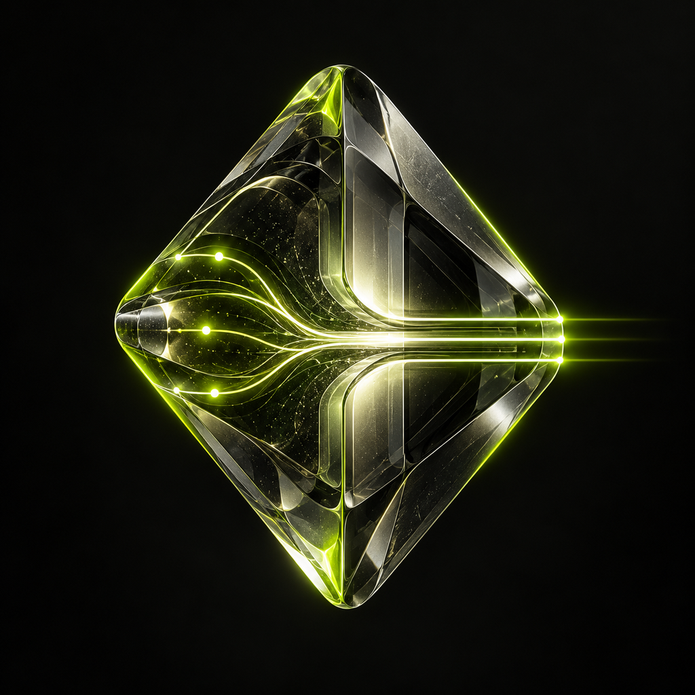

An identity
in transition.
A crystalline signature for an evolving research intelligence. One identity across the website, research records and public profiles.

The transition core.
Exploratory paths converge through an optical core and continue as ordered signals. A visual signature for trust surviving a change of generations.


The selected crystal identity is available as a 1024 × 1024 profile image and a 500 × 500 DEX icon.
The intelligence
is in the method.
SEEKER and KEEPER are represented through their work: bounded search, counterexamples, candidate changes, and fixed acceptance. The website shows a research process rather than a fictional body.
Explore the research loopA scientific visual language.
Real quantum hardware provides context. Precise diagrams explain the mechanism. A restrained green signal connects the project’s own identity across both.
#C5FA27
#10150F
#F8F7F2